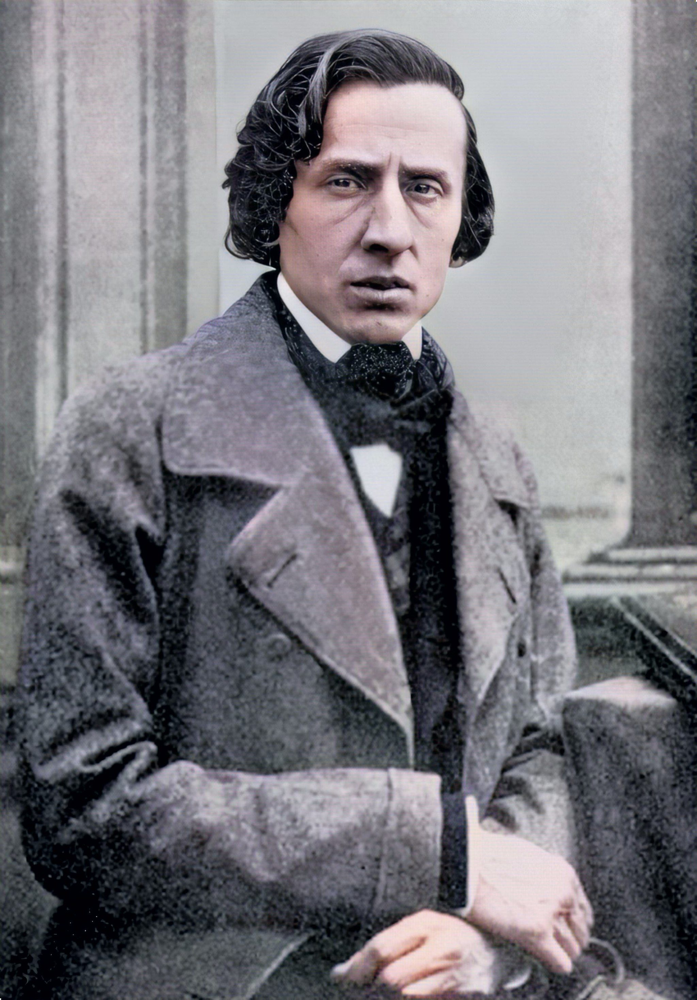
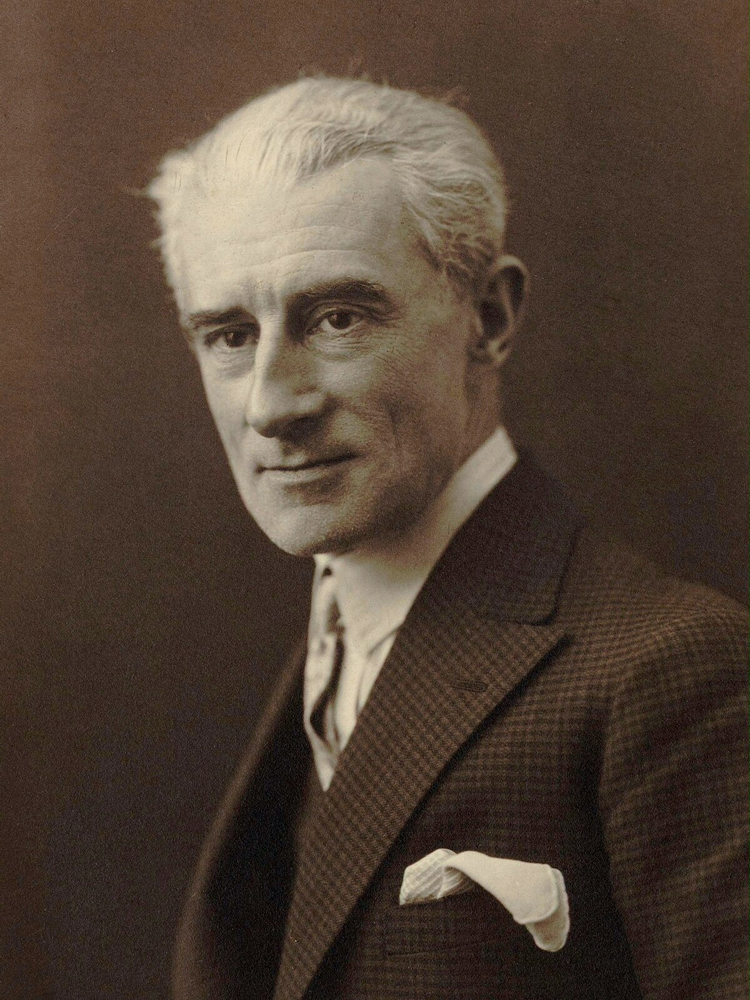
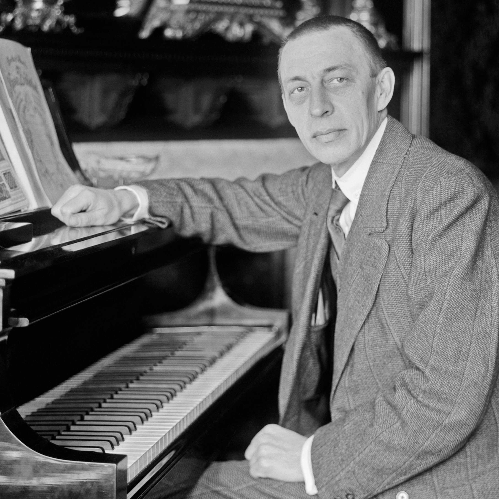
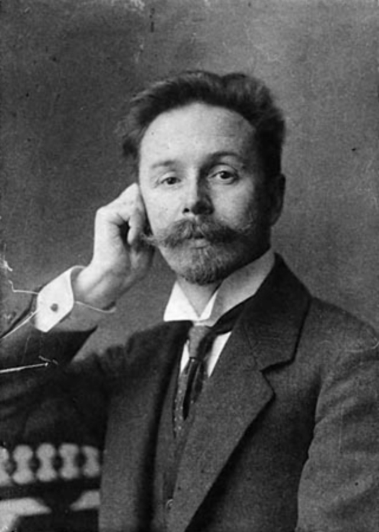

Chopin: Polish composer who is mainly known for making deppressive piano pieces

Ravel: French composer that makes dreamy masterpieces (unravel my clothes please)

Rachmaninoff: Russian composer that strikes you in the soul

Scriabin: Absolutely bonkers, I mean being Rachmaninoff's rival would do that to you
Music, I feel, must be emotional first and intellectual second. The only love affair I have ever had was with music.
-Maurice the player Ravel